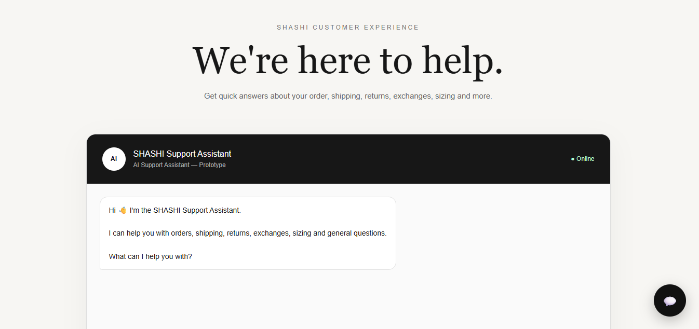

Philip Roberts
Frontend developer, product designer, and CareerLead Specialist, turning ideas and career goals into clear, working results.
I turn problems into simple, fast websites and interfaces. I start by understanding what people need, design the solution, build it, and check the numbers to make sure it's working.
One process, four skills working together
Web development, product design, data analysis and career guidance are not separate services. I use them together, in this order.
Understand
I look at the numbers and talk to users to find what is really going wrong.
Data analysisDesign
I plan the flow and layout so the solution is clear before any code is written.
Product designBuild
I develop a fast, responsive, accessible interface that works on any device.
Frontend developmentGuide
I help you present your skills clearly: your CV, your online presence, and your next career move.
CareerLead SpecialistAbout me
A closer look at how I actually help, beyond the job titles.
I'm Philip, and I work at the point where a website, a product and a career decision all need the same thing: clarity. Most of the time, a business doesn't just need "a website", and a person doesn't just need "a CV." They need someone who can look at the whole picture, spot what's actually holding things back, and fix that specific thing.
As a frontend/web developer, I build the sites and interfaces themselves: fast, responsive, and easy to use on any device, from a single landing page to a full product interface.
As a product designer, I shape how something works before it's built, mapping out user flows and screens so the end result actually makes sense to the people using it, not just to me.
As a CareerLead Specialist, I help individuals get unstuck in their own careers: shaping a clear CV and online presence, structuring a job search or transition plan, and presenting their skills the way an employer or client actually wants to see them.
What ties all of this together is data: I check what's working, what isn't, and adjust from there, instead of guessing.
For a business
I can design and build the website or interface itself, and also help set up simple ways to track how it's performing.
For an individual
I can build your personal site or portfolio, and separately help you plan your next career move: your CV, your positioning, and your search strategy.
For a product idea
I can take it from a rough idea to designed screens to a working, responsive build.
Problems I solve
Whether you are one person or a growing business, the goal is the same: a clear solution you can measure.
For individuals
You need to be found, trusted and taken seriously online.
- Portfolio or personal site that presents your work clearly
- Professional online presence that helps you win clients or jobs
- Simple page analytics so you know who is visiting
For businesses
You need a website or product that brings in customers and shows results.
- Landing pages designed to turn visitors into customers
- Web app interfaces that are easy for users to learn
- Dashboards and reports that turn raw data into decisions
Selected work
Real projects, live and browsable. Click any card to visit the site.
 LUMÉRA
LUMÉRA
LUMÉRA Skincare
A storefront built to give a skincare brand a professional home online: a full product showcase across three items, brand story, and a direct WhatsApp ordering flow.
Visit site → EL CHAMON
EL CHAMON
EL CHAMON
A digital home for a Nigerian food brand: an appetite-driven design, a browsable menu, and a simple cart-to-WhatsApp ordering journey built for mobile customers.
Visit site →
SHASHISHASHI Support Assistant
An AI customer-care prototype for a jewellery brand, handling order tracking, returns, exchanges and sizing questions instantly, with a clear handoff to a human when needed.
Visit site →Tools and skills
What I use to move a project from problem to measurable result.
Build
Frontend and web development
HTMLCSSJavaScriptResponsive designGit and GitHubDesign
Product and interface design
FigmaUser flowsWireframesPrototypingUsabilityMeasure
Data analysis and reporting
ExcelData cleaningVisualisationReportingAnalyticsLet's solve your problem
Tell me what you are trying to fix or build. I will reply within two working days.
Send an email